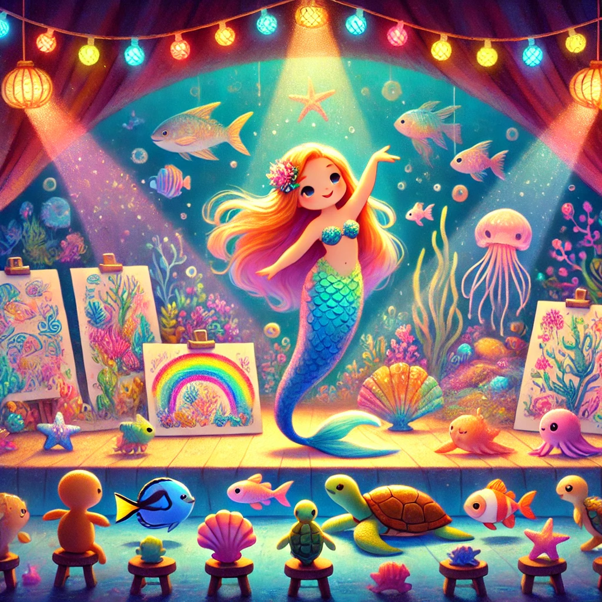

El Gran Espectáculo de Coral

Había una vez, en las profundidades del océano, una sirena llamada Coral. Coral era una sirena muy especial porque tenía dos grandes pasiones: bailar y dibujar. Sus amigas sirenas a menudo la veían girando y moviéndose graciosamente al ritmo de las corrientes marinas, o sentada sobre una roca, dibujando hermosos paisajes submarinos con colores mágicos.
Un día, mientras Coral estaba dibujando un atardecer submarino, se dio cuenta de que algo faltaba en su vida. Aunque amaba bailar y dibujar, quería compartir su arte y alegría con los demás. Decidió organizar un gran espectáculo de baile y arte en el reino submarino de Oceania.
Con entusiasmo, Coral comenzó a preparar el espectáculo. Invitó a todas las criaturas del mar, desde los peces más pequeños hasta las tortugas más grandes. Practicaba sus movimientos de baile todos los días y pasaba horas creando fondos coloridos y detallados para su escenario.
Finalmente, llegó el día del gran espectáculo. Coral estaba un poco nerviosa, pero cuando vio a todos sus amigos reunidos y sonriendo, se sintió llena de energía. Empezó a bailar, moviéndose con gracia y elegancia, mientras las luces de colores iluminaban sus dibujos en el fondo. Los peces nadaban a su alrededor, creando un espectáculo de luces y sombras que dejaba a todos maravillados.
El espectáculo fue un éxito total. Todos aplaudieron y vitorearon a Coral por su increíble talento y por compartir su pasión con ellos. Desde ese día, Coral organizaba espectáculos regularmente, trayendo alegría y arte a su reino submarino.
Y así, Coral demostró que cuando sigues tus pasiones y las compartes con los demás, puedes crear momentos mágicos y llenos de felicidad. Y colorín colorado, este cuento se ha acabado.
Buenas noches, Alondra. ¡Dulces sueños!